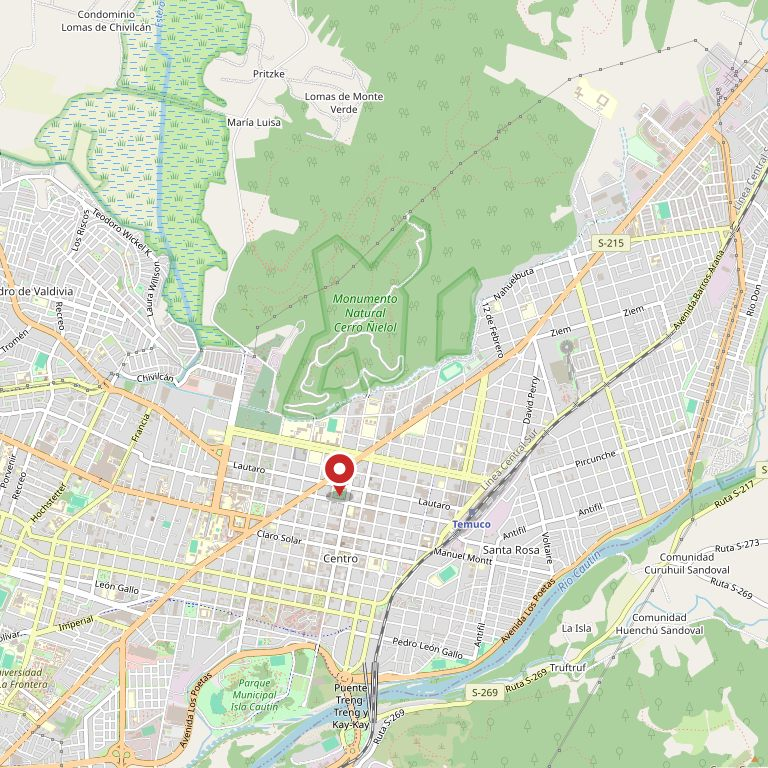

Local 1
MCO Matta
Manuel Antonio Matta 301
4,4 con 160 reseñas
El local del centro. Cerca de todo y con el mostrador de siempre para lo que se lleva en la mano.
Horario por confirmar
Foto 1 Uno de los locales por fuera con su letrero, o el pasillo con gente · a sangre · mín. 1920 × 1280 px
Temuco · Dos locales
reseñas entre nuestros dos locales
Antes de comprar nada
Es la duda de verdad, y ninguna ferretería la contesta porque conviene venderle a todo el mundo. Nosotros preferimos decirlo: hay cosas que se hacen solo y otras que salen más caras si se hacen mal.
Se corta el agua, se suelta lo viejo y se pone lo nuevo. Lo único que hay que tener claro es el largo de los flexibles.
Necesita Llave nueva · flexibles · teflón · llave francesa
El truco no es la fuerza: es usar el tarugo correcto. No es lo mismo pegar en hormigón que en tabique de volcanita.
Necesita Taladro · broca según el muro · tarugos correctos · nivel
Se corta la luz en el tablero — no basta el interruptor de la pared — y se saca una foto de cómo estaban los cables antes de soltarlos. Si aparece algo raro adentro, ahí sí conviene parar.
Necesita Destornillador aislado · buscapolo · enchufe nuevo
Difícil no es. Largo sí: el 80% del trabajo es tapar, lijar y preparar. El que se salta esa parte es el que después dice que la pintura era mala.
Necesita Pintura · pasta muro · lija · cinta · rodillo y bandeja
Esto lo tiene que hacer alguien autorizado, y no es un consejo de vendedor: es la ley y es su seguridad. Le vendemos los materiales al gasfíter, no el problema a usted.
Cambiar un enchufe es una cosa; meter mano al tablero, los automáticos o el diferencial es otra. Acá se llama al eléctrico y se duerme tranquilo.
Esto lo escribí yo en términos generales y hay que revisarlo con ustedes. Pero decir "esto no lo haga usted" es lo que más confianza genera en una ferretería de barrio: el cliente vuelve justamente porque una vez le dijeron que no comprara.
Dónde estamos
Los dos son MCO y los dos atienden igual. Vaya al que le quede más cerca.
Local 1
Manuel Antonio Matta 301
4,4 con 160 reseñas
El local del centro. Cerca de todo y con el mostrador de siempre para lo que se lleva en la mano.
Horario por confirmar
Local 2
Recabarren 03350
456 reseñas
El grande. Es el local con más opiniones de los dos, con más espacio para lo voluminoso y estacionamiento para cargar.
Horario por confirmar
El detalle de qué se concentra en cada local es un ejemplo: se ajusta a cómo está repartido de verdad.
Qué vendemos
Y lo que no está, se consigue. Pregunte antes de irse a otro lado.
El listado es un ejemplo de estructura: se ajusta a lo que MCO realmente maneja.
Horarios y contacto
Foto 3 La fachada de uno de los locales, con el letrero visible · vertical · mín. 900 × 1200 px

Llame y cuente qué quiere hacer. Le decimos qué necesita, cuánto sale, y si conviene que lo haga usted.
Llamar a MCO (45) 229 4324Esto es una propuesta de sitio web — preparada para Ferretería MCO por Yordy Serna. No está publicada, y esta sección no va en el sitio final.
616 reseñas entre los dos locales (160 en Matta y 456 en La Olleta). Y el botón "Sitio web" de su ficha no lleva a una página suya: lleva a la ficha de la red MTS, donde aparecen como un local más de una lista. Verificado el 21 de agosto de 2026.
Estar en la red sirve para comprar. Pero para vender los deja sin cara propia: quien los busca termina en una página que no habla de ustedes, no muestra sus locales ni sus 616 opiniones. La red no va a contar que en MCO le preguntan para qué es lo que anda buscando.
Una demostración. Lo verificado es real: nombres, direcciones, teléfono y reseñas de ambos locales. Horarios, rubros y el reparto entre locales están marcados como ejemplo. Faltan sus fotos (hay tres espacios) y revisar juntos la sección "¿Lo hago yo?".
Yordy Serna · desarrollo web en Loncoche · yordyserna.github.io